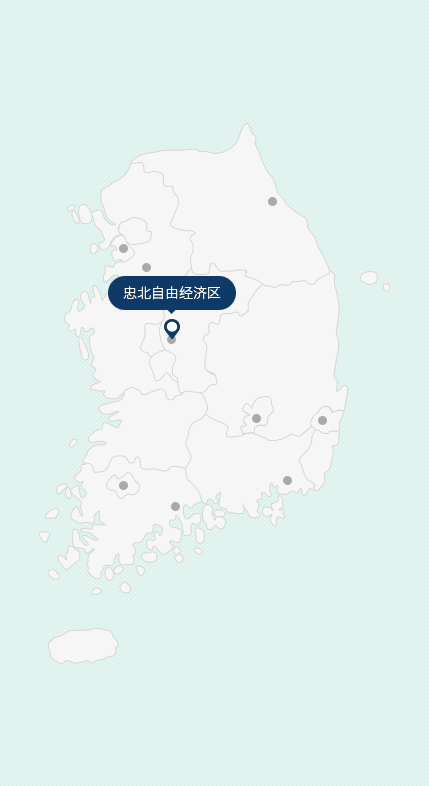
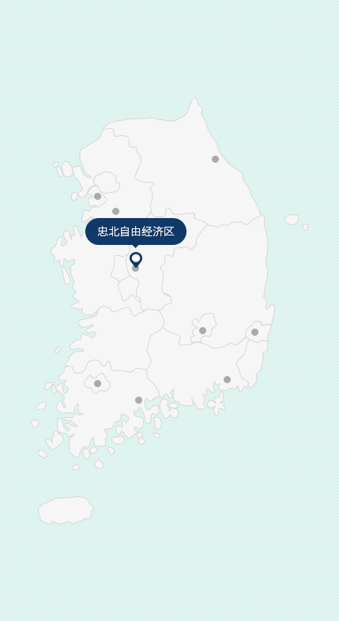

経済自由区域庁
- Home
- 有望産業・立地
- 立地情報
- 経済自由区域庁
経済自由区域庁
ビジネスの成功の秘訣 それは 大韓民国 経済自由区域
世界の資本と情報が集中する国際的なビジネスの中心地、グローバル企業に 最適な経営環境、大韓民国経済自由区域です。
韓国の経済自由区域(Korean Free Economic Zones : KFEZ)は外国人投資企業の経営環境と生活環境を改善し、各種の規制緩和を通じて企業の経済活動の自主性と投資誘因を最大限保証し、外国人投資を積極的に誘致するための特別経済区域を意味し、2003年の仁川からはじまり、釜山ㆍ鎮海、光陽湾圏、京畿、大邱ㆍ慶北、忠北、東海岸圏、光州、蔚山の計9ヵ所が造成・運営されています。
 

グローバルビジネス・フロンティア(Global Business Frontier)
仁川経済自由区域(IFEZ)
- 位置 : 仁川(延寿区ㆍ中区ㆍ西区)
- 面積 : 122.43㎢
- 開庁日 : 2003. 10. 15
- 空港ㆍ港湾 : 仁川国際空港、仁川港
- 開発完了 : 2030年(第1次03~09、 第2次10~14、 第3次15~30)
重点誘致業種(中核戦略産業)
バイオㆍヘルスケア、航空・複合物流、スマート製造(先端産業)、知識・観光サービス
未来新産業の革新成長拠点
京畿経済自由区域(GGFEZ)
- 位置 : 京畿(平沢)
- 面積 : 5.24㎢
- 開庁日 : 2008. 07. 22
- 空港ㆍ港湾 : 平沢港、唐津港
- 開発完了 : 2020(第1次08~13、第2次14~20)
重点誘致業種(中核戦略産業)
先端産業(自動車、IT、機械、化学、物流)、サービス産業(観光、流通、商業、ホテル)
休養型観光レジャー産業、水素エネルギー産業、先端素材部品産業の北東アジア経済中心地
東海岸圏経済自由区域(EFEZ)
- 위치 : 江原(江陵、東海)
- 面積 : 4.31㎢
- 開庁日 : 2013. 07. 19
- 空港ㆍ港湾 : 襄陽国際空港、東海港
- 開発完了 : 2024(第1次13~24)
重点誘致業種(中核戦略産業)
休養型観光レジャー産業、水素エネルギー産業、先端素材部品産業
中部圏グローバル先端産業の拠点基地
忠清北道経済自由区域(CBFEZ)
- 位置 : 忠清北道(清州)
- 面積 : 4.96㎢
- 開庁日 : 2013.04.26
- 空港ㆍ港湾 : 清州国際空港
- 開発完了 : 2020(第1次13~20)
重点誘致業種(中核戦略産業)
バイオ、航空製造ㆍサービス、複合物流
未来のためのAI融合複合新産業ハブ
韓国唯一の「AI経済自由区域」である光州経済自由区域は、第4次産業革命の中核分野である人工知能を中心に未来型エコカー、スマートエネルギー、医用生体工学などの先端技術の融合複合を通じて韓国の革新成長の拠点として造成されています。
AI融合複合地区、 未来型自動車地区、スマートエネルギー1、2地区で造成された光州経済自由区域は、企業の投資とビジネスの成功のための最適な環境を約束します。
光州経済自由区域(GJFEZ)
- 位置 : 光州(南区・北区・光山区)
- 面積 : 4.37㎢
- 開庁日 : 2021.01.27
- 空港ㆍ港湾 : 光州空港
- 開発完了 : ‘20~’25
重点誘致業種(中核戦略産業)
AI自動車及びエコカー部品、スマートエネルギー関連、次世代バッテリー、医用生体工学及びヘルスケアなど
北東アジアビジネスの中心地、チャンスの地!
最高の投資地域GFEZです。
光陽湾圏経済自由区域(GFEZ)
- 位置 : 全羅南道(麗水ㆍ順川ㆍ光陽)、慶尚南道(河東郡)
- 面積 : 59.6㎢
- 開庁日 : 2003. 03. 24
- 空港ㆍ港湾 : 光陽港、麗水空港
- 開発完了 : 22年(第1次03~09、第2次10~14、第3次15~22)
重点誘致業種(中核戦略産業)
未来型先端素材産業、機能性化学、二次電池、港湾物流サービス、複合観光レジャー、バイオ産業
製造業の神話を経て先端融合複合メディカル産業のビジョンまで
대구ㆍ경북경제자유구역(DGFEZ)
- 位置 : 大邱、慶尚北道(慶山、栄川、浦項)
- 面積 : 18.46㎢
- 開庁日 : 2008.08.13
- 空港ㆍ港湾 : 大邱空港、浦項迎日湾港
- 開発完了 : 2024(第1次08~13、第2次14~24)
重点誘致業種(中核戦略産業)
自動車及び機械部品、グリーンエネルギー、バイオ、医療機器、IT、SW
北東アジアエネルギーハブ、蔚山経済自由区域
(UFEZ : Ulsan Free Economic Zone)
울산경제자유구역(UFEZ)
- 位置 : 蔚山(南区ㆍ北区ㆍ蔚州郡)
- 面積 : 4.7㎢
- 開庁日 : 2021.01.14
- 空港ㆍ港湾 : 蔚山空港、蔚山港
- 開発完了 : '20~'30
重点誘致業種(中核戦略産業)
未来モビリティ、バイオㆍ化学、新素材、水素ㆍ低炭素エネルギー、水素産業(自動車部品、燃料電池)
世界最高の物流·ビジネスの中心
釜山鎮海経済自由区域(BJFEZ)
- 位置 : 釜山(江西区)、慶尚南道(昌原市)
- 面積 : 51.1㎢
- 開庁日 : 2004. 03. 30
- 空港ㆍ港湾 : 金海空港、釜山新港
- 開発完了 : 2023(第1次04~06、第2次07~15、第3次16~23)
重点誘致業種(中核戦略産業)
先端部品素材製造業(自動車、海洋プラント部品、産業機械ㆍ部品など)、港湾物流、R&D、観光レジャー、バイオㆍヘルス